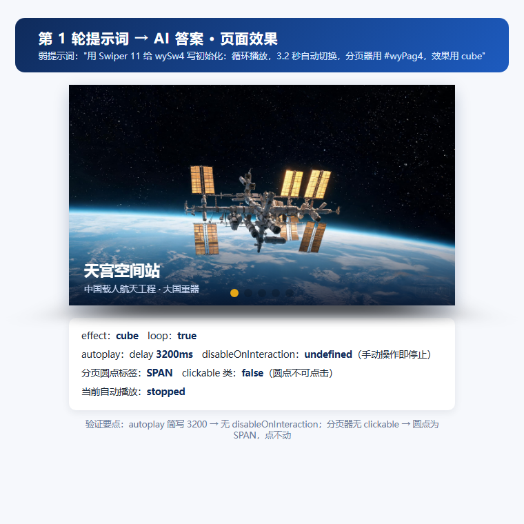
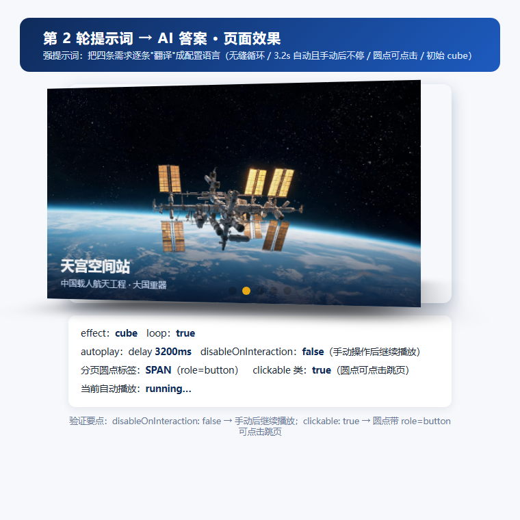

提示词工程师：让 AI 听懂需求
姓名：陈茹 · 2026-11-11 · 使用模型：GLM-5.3-Flash ｜ 目标：不写代码，把需求"翻译"给 AI，生成 new Swiper('#wySw4', {...}) 配置
任务要求与硬性要求
把下面需求"翻译"给 AI，让它生成 new Swiper('#wySw4', {...}) 配置：
- 无缝循环
- 3.2 秒自动翻页，且手动操作后不停止
- 圆点分页器可点击
- 初始效果为 cube
硬性要求：至少迭代 2 轮提示词（第 1 轮 AI 答案大概率有遗漏或错误）；保留每轮提示词与 AI 回答；亲自粘进页面验证每项需求，用截图 + 一句话结论说明验证结果。
第 1 轮 · 初版提示词（写得比较随意）
用 Swiper 11 给 id 为 wySw4 的轮播写初始化代码：循环播放，3.2 秒自动切换一次，分页器用 #wyPag4，切换效果用 cube。
第 1 轮 AI 回答
new Swiper('#wySw4', {
loop: true, // ① 无缝循环 —— 满足
autoplay: 3200, // ② 数字简写：没有 disableOnInteraction，手动一拖就停 —— 不满足
pagination: { el: '#wyPag4' }, // ③ 没有 clickable: true，圆点点不动 —— 不满足
effect: 'cube' // ④ 3D 立方体 —— 满足
});
第 1 轮粘贴进页面验证（swiper-task.html 任务 4 区域）
| 需求 | 验证证据 | 结论 |
|---|---|---|
| ① 无缝循环 | loop: true | ✓ 通过 |
| ② 手动后不停 | autoplay 只是数字 3200；鼠标真实拖拽后 autoplayRunning: false，自动播放停止 | ✗ 不满足 |
| ③ 圆点可点击 | clickable: false，分页器无 swiper-pagination-clickable 类，圆点渲染为 span，点击无反应 | ✗ 不满足 |
| ④ cube 效果 | effect: 'cube' | ✓ 通过 |
活体演示：第 1 轮 AI 答案原样粘进真实轮播（可亲手操作，看它错在哪里）

天宫空间站中国载人航天工程 · 大国重器

复兴号动车组中国高铁 · 大国重器

C919 大飞机国产大飞机 · 大国重器

奋斗者号潜水器万米深潜 · 大国重器

中国天眼 FAST世界最大单口径射电望远镜
（也可以直接用鼠标按住轮播拖）
正在读取实例状态…
❌ 第 1 轮答案错在哪里？
- 错误 1 · autoplay 写成数字 3200：少了
disableOnInteraction: false，Swiper 默认"手动操作即停止"。点上方【模拟手动拖拽】（或直接用鼠标拖轮播），看状态面板：自动播放变 stopped，之后 3.2 秒自动翻页再也没有了。 - 错误 2 · pagination 少了
clickable: true：圆点是普通 span、没绑定跳页监听。点【模拟点击第 3 个圆点】，页面纹丝不动——圆点根本点不动。 - （loop: true 和 effect: 'cube' 这两项倒是对的）

一句话结论：第 1 轮答案只满足了①④——autoplay 数字简写导致手动一拖就停、分页器圆点根本点不动，需求②③全部落空。
第 2 轮 · 迭代改进提示词（把每条需求"翻译"成配置语言）
请使用 Swiper 11 为我编写轮播初始化代码。页面中已有轮播容器
<div class="swiper" id="wySw4">（内含 5 个 swiper-slide），分页器容器为
<div class="swiper-pagination" id="wyPag4">。请生成 new Swiper('#wySw4', {...}) 配置，
必须同时满足以下 4 条需求：
1. 轮播无缝循环播放，最后一张翻完直接接回第一张，不出现回跳空白；
2. 每 3.2 秒自动翻页，并且用户手动拖拽或点击切换之后自动播放不能停止，要继续轮播；
3. 分页器渲染为小圆点样式，且每个圆点可以点击，点击后直接跳到对应页；
4. 初始切换效果使用 3D 立方体（cube）。
输出要求：只输出一段完整可运行的 new Swiper 代码块，每个配置项后面用行注释标明
它对应上面第几条需求，不要输出多余解释。
第 2 轮 AI 回答
new Swiper('#wySw4', {
loop: true, // 需求①：无缝循环
autoplay: {
delay: 3200, // 需求②：每 3.2 秒自动翻页
disableOnInteraction: false // 需求②：手动拖拽/点击后自动播放继续，不停止
},
pagination: {
el: '#wyPag4', // 需求③：圆点分页器渲染到指定容器
clickable: true // 需求③：圆点可点击，直接跳到对应页
},
effect: 'cube' // 需求④：初始切换效果为 3D 立方体
});
第 2 轮粘贴进页面验证（swiper-task.html 任务 4 区域）
| 需求 | 验证证据 | 结论 |
|---|---|---|
| ① 无缝循环 | loop: true | ✓ 通过 |
| ② 手动后不停 | 鼠标真实拖拽后 autoplayRunning: true，自动播放继续；点击圆点跳页后 3.2 秒内又自动翻到下一页 | ✓ 通过 |
| ③ 圆点可点击 | 分页器带 swiper-pagination-clickable 类，圆点渲染为 button "Go to slide N"；点击第 1 个圆点后 realIndex: 0 跳页成功 | ✓ 通过 |
| ④ cube 效果 | effect: 'cube'，切换时呈 3D 立方体旋转（静止时正面为平面属正常表现） | ✓ 通过 |
活体演示：第 2 轮 AI 答案原样粘进真实轮播（同样的操作，这次全对了）
天宫空间站中国载人航天工程 · 大国重器
复兴号动车组中国高铁 · 大国重器
C919 大飞机国产大飞机 · 大国重器
奋斗者号潜水器万米深潜 · 大国重器
中国天眼 FAST世界最大单口径射电望远镜
（拖完看状态：依然 running…，且 3.2 秒后继续自动翻页）
正在读取实例状态…
✅ 第 2 轮答案对在哪里？
- disableOnInteraction: false：点【模拟手动拖拽】——拖完状态面板依然是 running…，3.2 秒后继续自动翻页，手动操作完全不影响轮播。
- clickable: true：点【模拟点击第 3 个圆点】——轮播立刻跳到第 3 页，且自动播放不中断。
- loop: true + effect: 'cube'：无缝循环、3D 立方体初始效果同时成立，四条需求全部满足。

一句话结论：第 2 轮四条需求全部满足，手动拖拽、圆点点击均不影响 3.2 秒自动轮播持续进行。
提示词工程心得
两轮答案的差异核心在一句话：第 1 轮只说"3.2 秒自动切换"，AI 给出 autoplay: 3200 数字简写（默认手动操作即停止）；第 2 轮把"手动操作后不能停止"明确写进需求，AI 才会生成 disableOnInteraction: false。
结论：把反直觉的边界行为显式写进提示词，是让 AI 听懂需求的关键。